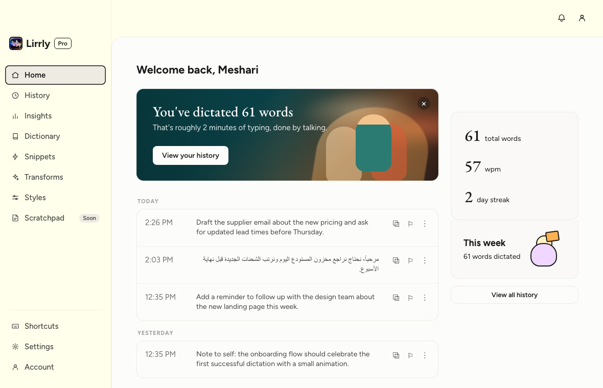
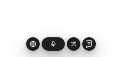

إملاء مجاني ومفتوح المصدر لأجهزة ماك
تكلّم.
والكتابة علينا.
اضغط ⌘⇧D في أي تطبيق وتكلّم. ليرلي برو تحوّل صوتك إلى كتابة نظيفة ومرتّبة — وتلصقها مكان المؤشر بالضبط.
brew install --cask m55h11r11/lirrly/lirrly
- معالجات Apple Silicon
- macOS 12 أو أحدث
- مفتوح المصدر · AGPL-3.0
عرض متحرك: تُملى جملة باللهجة فيها كلمات حشو، فترتّبها ليرلي وتلصق النسخة النظيفة بنفس لهجتها؛ وبعدها جملة بالإنجليزي.
ثلاث ثوانٍ وينكتب.
-
01 اضغط
⌘⇧D من أي مكان في جهازك. بدون ما تدوّر على نافذة، ولا تنتقل لتطبيق ثاني.
-
02 تكلّم
قُلها مثل ما تقولها عادةً. الحشو، والبدايات المتلخبطة، والتفكير بصوت عالي — كله ماشي.
-
03 وينلصق
يوصل النص المرتّب مكان المؤشر، وترجع الحافظة مثل ما كانت، كأن ما صار شيء.
لهجتك… مو الفصحى.
تحافظ ليرلي على كلامك مثل ما قلته — بدون ما تحوّله لفصحى رسمية ولا تكسر جملتك.
- حجازي
- نجدي
- مصري
- شامي
- خليجي
العربية أولاً
أدوات الإملاء تحوّل العربية كلها إلى فصحى. ليرلي تحافظ على لهجتك — حجازي، نجدي، مصري، شامي — مثل ما تتكلم فعلاً.
سجلّ يُقرأ من اليمين لليسار، وتنظيف يحافظ على اللهجة، وتعرّف على الكلام تضبطه بقاموسك الخاص. بناها متحدث أصلي بالعربية تعب من أدوات ما تلحق عليه.
خصوصيتك في التصميم،
مو في الوعود.
بدون حساب، ولا يوجد أي شيء تابع لليرلي في طريق إملائك — صوتك يروح مباشرة من جهازك إلى مفتاح Groq اللي تملكه. فيه تشخيصات، لكنها اختيارية، وتجي مطفأة من الأساس.
-
المفتاح في سلسلة المفاتيح
مفتاح الـAPI حقك محفوظ في سلسلة مفاتيح macOS (Keychain). الواجهة ما تشوفه أبداً — ولا مرة.
-
السجلّ يبقى عندك
آخر 200 إملاء محفوظة في ملف محلي على جهازك. ابحث فيها، انسخ منها، أو احذفها — القرار لك.
-
بدون حساب، والتحليلات مطفأة افتراضياً.
ما فيه شيء تسجّل فيه. كلامك يوصل Groq بمفتاحك أنت، وما يروح لأي مكان ثاني — إلا إذا شغّلت تقارير الأعطال، أو أرسلت ملاحظاتك بنفسك.
-
الصوت يروح لمكان واحد
مباشرة إلى محرّك تحويل الكلام لنص اللي اخترته. ولا لأي مكان ثاني، أبداً.
التحويلات
حدّد. ⌥T. وتتحوّل.
حدّد نصاً في أي تطبيق — إيميل، مستند، محادثة — واضغط ⌥T، والتحويل المفعّل يعيد كتابته في مكانه.
عرض متحرك: تُحدَّد جملة عامية، ويعيد التحويل كتابتها في مكانها — بصيغة رسمية، أو بصياغة أوضح، أو مترجمة للإنجليزي.
- إعادة صياغة
- صياغة رسمية
- تدقيق لغوي
- تلخيص
- ترجمة
…أو اكتب تحويلك الخاص بكلماتك.
بيتٌ لصوتك.
سجلّ فيه سرعتك الحقيقية بالكلمات في الدقيقة، وقاموس شخصي يحسّن التعرّف على كلامك، ومقتطفات، وأساليب حسب السياق، وإحصاءات — وكلها محلية.


مجاني بمعنى
مجاني فعلاً.
برخصة AGPL-3.0 ومبني على المكشوف — اقرأ كل سطر يلمس صوتك، وخذ نسختك منه، وأي تعديلات توزّعها تبقى مفتوحة. التطبيق مجاني؛ وأنت تجيب مفتاح Groq المجاني حقك.
بكل صراحة، هذا اللي جاي
- وضع الأوامر
- المسودة
- محرّك محلي — بدون إنترنت، ومجاناً
إملاء مجاني ومفتوح المصدر لأجهزة ماك — العربية أولاً. Tauri + Rust + React.
أسئلة، وأجوبتها.
هل هو مجاني فعلاً؟
ليرلي برو مجانية ومفتوحة المصدر برخصة AGPL-3.0 — وما تحتاج حساب. توصّلها بمفتاح Groq المجاني حقك عشان تحويل الكلام لنص. (ممكن تجي إضافات مدفوعة لاحقاً، لكن التطبيق المفتوح المصدر يبقى مجانياً.)
أي لغات تدعم؟
كل لغة يتقنها Whisper: الإنجليزية، والعربية — مع الحفاظ على اللهجات — والإسبانية، والفرنسية، والألمانية، والإيطالية، والبرتغالية، والهندية، أو التعرّف التلقائي على اللغة.
وين يروح صوتي؟
من المايك مباشرة إلى محرّك تحويل الكلام لنص اللي اخترته — Groq حالياً، ومحرّك محلي على الجهاز ضمن الخطة. ما فيه شيء تابع لنا في المنتصف: الصوت، والنص اللي يرجع، يخصّون حساب Groq اللي استخدمت مفتاحه، وتحت شروط Groq.
ليش أحتاج مفتاح Groq؟
ليرلي ما عندها خوادم، فأنت تركّب مفتاحك الخاص (مجاني من console.groq.com). يُحفظ في سلسلة مفاتيح macOS، وما يُعرض للواجهة مرة ثانية، ويُرسل لمكان واحد بس — Groq، عشان يصادق على طلباتك أنت.
تشتغل على أجهزة ماك بمعالج Intel؟
النسخ مبنية لمعالجات Apple Silicon على macOS 12 أو أحدث. ممكن تُبنى لـIntel من الكود المصدري، لكنها ما انختبرت عليه، وما هي مدعومة حالياً.
خلّك من الكتابة.
وابدأ تتكلّم.
brew install --cask m55h11r11/lirrly/lirrly
مجاني ومفتوح المصدر · AGPL-3.0 · مفتاحك، وجهازك، وكلامك